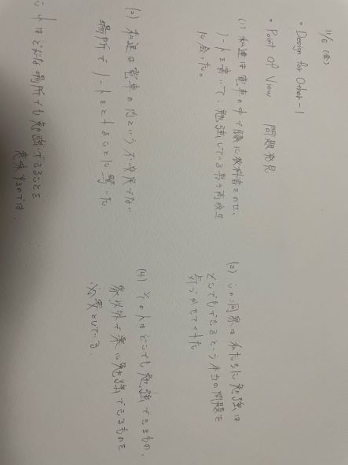
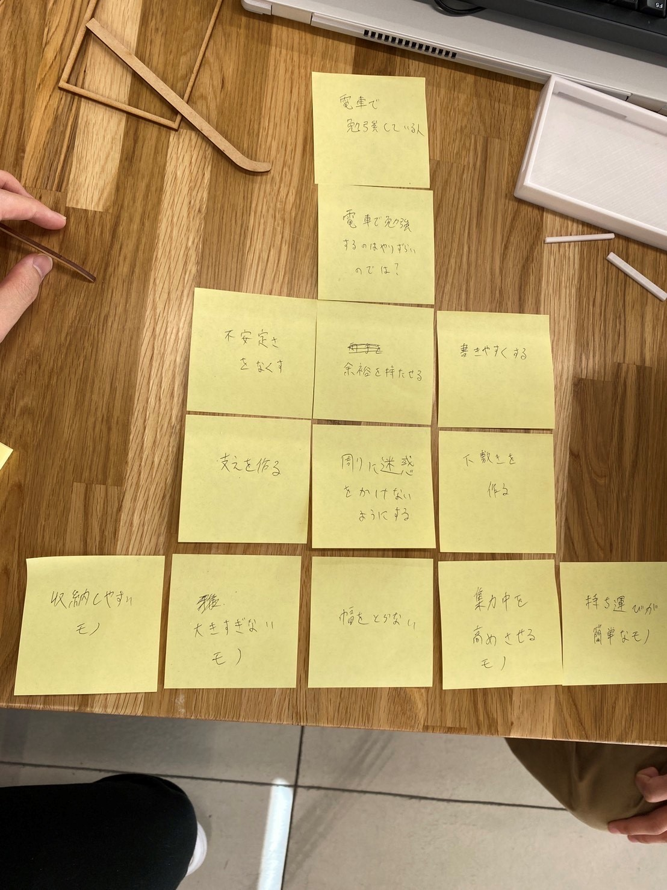
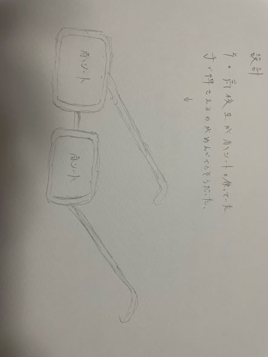
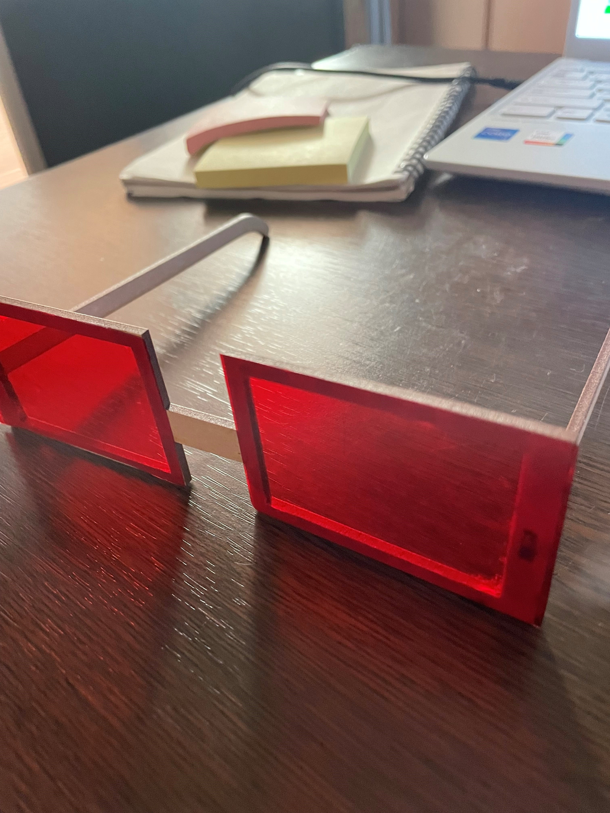

プロトタイピング＆ドキュメンテーション
Design for others-1
①ピックアップした対象

- このスケッチは10月29日に自分が撮影した写真をスケッチした絵です。登下校中の地下鉄の中で勉強している男子高校生の絵です。
- 膝に教科書や単語帳を載せ、その上にノートを置いて勉強していました。
②POVの画像

③HMWの画像

③構想段階の手書きのスケッチ

- この作品は、男子高校生を見て電車内という不安定な状況でも勉強でしやすくなるような物はないかと考えて構想した物です。
- 不安定な場所で勉強するためには、まず手を自由に使える状況にすることが大切だと考えました。
- そこで、男子高校生が使用していた単語帳に使う赤シートをめがねにすることによって、少しでも手を使わずに勉強できるような状態にしたいと思ってこの作品を構想しました。
④実際に作成したプロトタイピング
